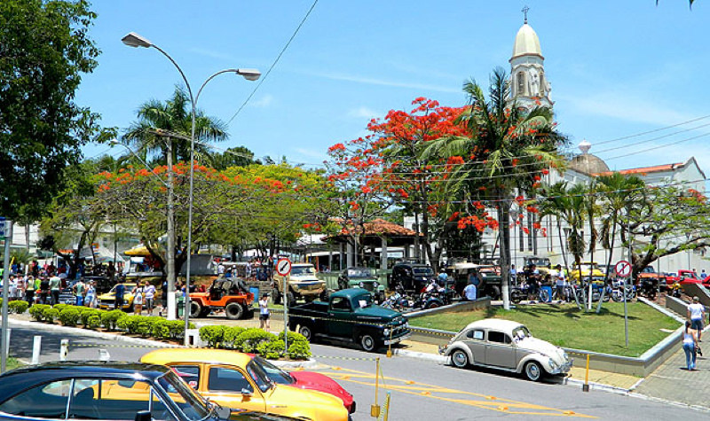
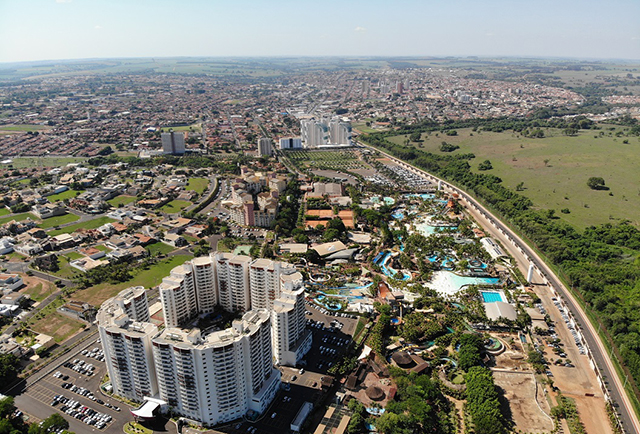
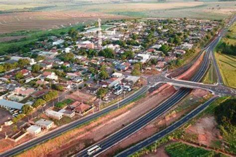
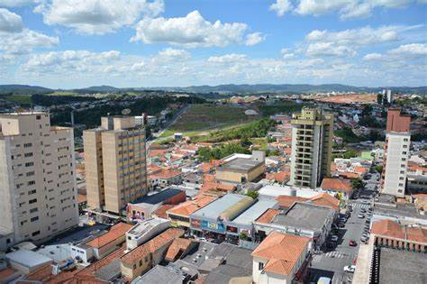
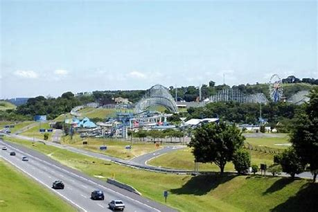
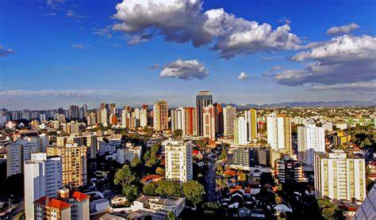
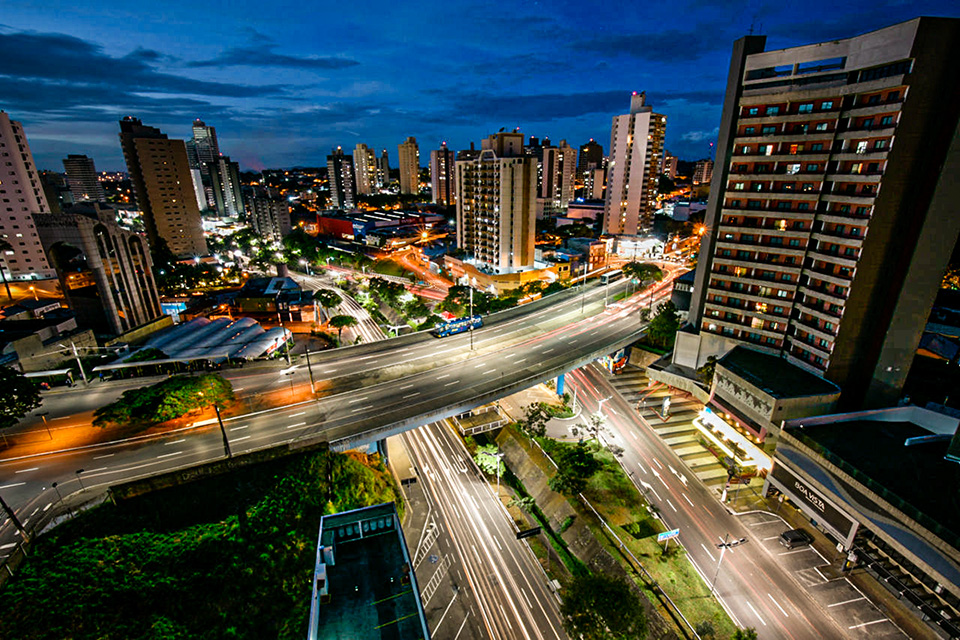
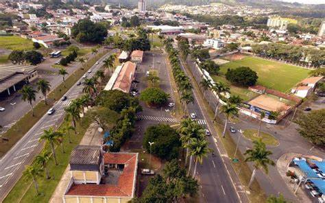
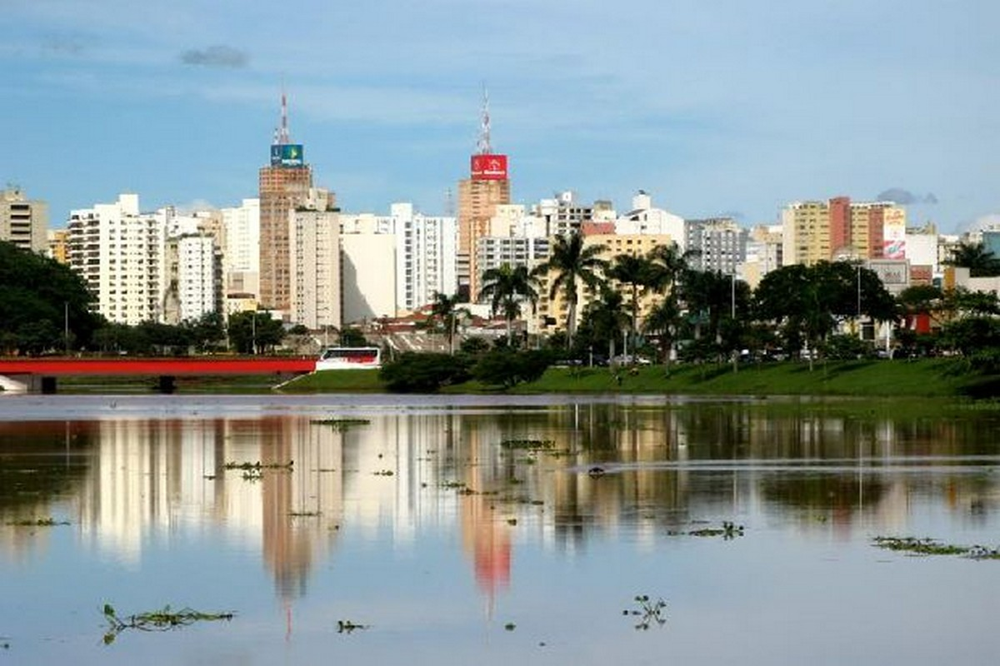
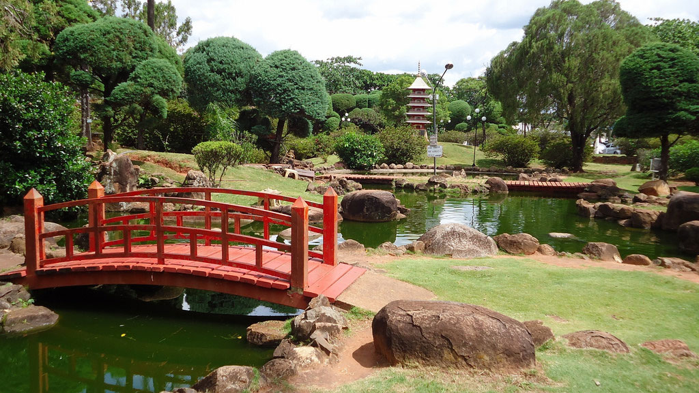

O Site do Pêssego
As 10 Melhores Cidades de São Paulo
São Paulo é uma das 27 unidades federativas do Brasil. Está situado na Região Sudeste e tem por limites os estados de Minas Gerais a norte e nordeste, Paraná a sul, Rio de Janeiro a leste e Mato Grosso do Sul a oeste, além do Oceano Atlântico a sudeste. É dividido em 645 municípios e sua área total é de 248 222,362 km², o que equivale a 2,9% da superfície do Brasil, sendo pouco maior que o Reino Unido.

Mas entre toda essa região e variedade de locais, quais são as melhores cidades para se viver no estado de São Paulo? Veja nossa lista de 10 das melhores cidades de São Paulo. Veja a seguir.
Índice
Cidade 1 -
Cidade 2 -
Cidade 3 -
Cidade 4 -
Cidade 5 -
Cidade 6 -
Cidade 7 -
Cidade 8 -
Cidade 9 -
Cidade 10 -
1- Louveira
A cidade de Louveira faz parte da região metropolitana de Jundiaí e possui aproximadamente 44 mil habitantes. Além de ser referência em crescimento sustentável, a cidade oferece serviços de saúde e educação eficientes. Desde 2015, a rede municipal de ensino de Louveira tem nota 7 no Índice de Desenvolvimento da Educação Básica, superando a meta do Governo Federal, que é nota 6. O município foi o primeiro do ranking, tanto na classificação por estado, quanto na classificação nacional.
Localiza-se a uma latitude 23º05'11" sul e a uma longitude 46º57'02" oeste, estando a uma altitude de 690 metros. Sua população estimada em 2015 era de 43.862 habitantes. Pertence à Aglomeração Urbana de Jundiaí. Possui uma área de 55,3 km².
O nome do município é uma referência a árvore louveira e fundada por Gaspar de Oliveira, natural de Logroño, Espanha, que casou-se na cidade de São Paulo com Páscoa da Costa, na primeira metade do século XVII. O casal radicou-se em Jundiaí, em meados daquele século, e consta ter possuído terras onde mais tarde veio a surgir a atual Louveira. Outros moradores na região, naquela época, teriam sido João Leme do Prado e Manoel Peres Calhamares.
Hino da cidade de Louveira
Voltar ao Índice
2- Olímpia
Considerado um dos polos turísticos mais importantes de São Paulo, a cidade de Olímpia recebe turistas o ano todo, atraídos pelos seus parques aquáticos e águas termais. Com uma população estimada de 55 mil habitantes, a cidade tem sua economia baseada no turismo, agroindústria e comércio. Em uma pesquisa realizada pela FGV, o município também foi considerado um dos melhores para se viver após os 60 anos. No ranking geral da Firjan, Olímpia ficou na 2ª posição.
Localiza-se a uma latitude 20º44'14" sul e a uma longitude 48º54'53" oeste, estando a uma altitude de 506 metros. Tem população de 54.037 habitantes e área de 802.7 km². É conhecida popularmente como a "Capital Nacional do Folclore", pelo Festival do Folclore, onde grupos de vários estados do país se reúnem para mostrar danças típicas de suas regiões, e por "Cidade Menina Moça". O município é formado pela sede e pelos distritos de Baguaçu e Ribeiro dos Santos.
Os primeiros indícios da presença humana no território paulista datam entre 11 e 7 mil anos atrás. Essas primeiras populações indígenas eram nômades, estabelecendo pequenos acampamentos em ambientes bastante diversificados, como planícies fluviais e topos de vertente de morros. Subsistiam da caça e coleta, o que demandava uma diversidade de artefatos líticos produzidos pela técnica de lascamento, preferencialmente confeccionados em arenito silicificado, sílex, quartzo, calcedônia, entre outras rochas. Esses vestígios identificados em São Paulo, bem como nos estados da Região Sul, são geralmente associados às tradições tecnológicas Humaitá e Umbu.
Hino da cidade de Olímpia
Voltar ao Índice
3- Estrela do Norte
Com aproximadamente 2.800 habitantes, a pequena cidade de Estrela do Norte é considerada calma e segura. Apesar de não contar com grandes indústrias, os setores de comércio e serviços movimentam a economia local. Em 2016, segundo o IBGE, o rendimento médio mensal dos trabalhadores de Estrela do Norte era de 2,3 salários mínimos. Além disso, a cidade oferece serviços eficientes de educação e saúde para a população. O município ocupa a 3ª posição no ranking geral da Firjan.
Localiza-se a uma latitude 22º29'17" sul e a uma longitude 51º39'37" oeste, estando a uma altitude de 409 metros. Sua população estimada em 2007 era de 2.454 habitantes. Possui uma área de 263,3 km².
Município criado por japoneses no início teve seu nome, como Patrimônio do Dragão. Anos depois, um morador da cidade que tinha uma fazenda em Minas Gerais como o nome de estrela do norte, colocou o mesmo nome no município. Estrela do Norte teve no total 11 prefeitos. Passou por situações financeiras difíceis por ter uma baixa arrecadação. A última administração municipal, houve um grande crescimento com várias obras de infraestrutura,mas uma parte de má administração deixou uma grande divida nos cofres públicos. Ao seu redor, encontra-se localizadas usinas de cana de açúcar, na qual se traz a renda de parte dos moradores.
Hino da cidade de Estrela do Norte
Voltar ao Índice
4- Itatiba
O município de Itatiba, na região metropolitana de Campinas, possui cerca de 113 mil habitantes e ocupa a 9ª posição no ranking da Firjan. A cidade é arborizada, segura e oferece aos habitantes bons serviços de mobilidade urbana, saúde, educação e lazer. Itatiba é conhecida como “A Capital do Móvel Colonial”, em função das indústrias moveleiras presentes na região. A agricultura também é importante para a economia local.
A cidade é conhecida como "Princesa da Colina", devido ao seu relevo acidentado. É famosa também pela indústria têxtil, metalúrgica, química e de tecnologia de ponta. Segundo a Federação das Indústrias do Estado do Rio de Janeiro, Itatiba é a terceira cidade com maior qualidade de vida do Brasil, apresentando um Índice FIRJAN de Desenvolvimento Municipal de 0,9276.
A povoação de Itatiba deu-se, provavelmente, entre o penúltimo e o último quarto do século XVIII, não se sabendo porém em que ano, precisamente, chegaram ao local os primeiros habitantes. Segundo antigas crônicas, alguns fugitivos de Atibaia e Piracaia (antiga Santo Antonio da Cachoeira) adentraram nas matas do atual município descendo o Rio Atibaia. Descobertos pelas escoltas de Piracaia e Atibaia, os fugitivos se embrenharam ainda mais no sertão, criando uma pequena comunidade.
Hino da cidade de itatiba
Voltar ao Índice
5- Itupeva
A cidade de Itupeva atingiu bons resultados nos índices de educação, saúde e renda e, por isso, foi considerada pela Firjan a 10ª melhor cidade para se viver no Brasil. A localização geográfica do município é privilegiada, atraindo grandes empresas e indústrias que movimentam a economia local. Com cerca de 60 mil habitantes, Itupeva também foi considerada pela revista “Isto É” uma das 50 cidades de pequeno porte mais desenvolvidas do Brasil.
Está entre as 50 maiores cidades do interior e é a maior entre as cidades do vale do Ribeira e do Paranapanema. Localiza-se à latitude 23º58'56" sul e à longitude 48º52'32" oeste, estando à altitude de 684 metros. Sua população, conforme estimativas do IBGE de 2019, era de 94 354 habitantes. O município é formado pela sede e pelos distritos de Alto da Brancal, Areia Branca e Guarizinho.
No século XVIII a coroa portuguesa ordenou que fossem instaladas na colônia do Brasil inúmeras vilas para que todo o território que Portugal considerava como seu, fosse devidamente ocupado e colonizado, pois a Espanha reivindicava territórios firmados no tratado de Tordesilhas. Neste contexto foi criado a vila de Faxina desmembrado da então vila de Sorocaba no dia 20 de Setembro de 1769, na ocasião estava presente Antonio Furquim Pedroso enviado pela comarca de São Paulo para a criação da nova vila, onde hoje se localiza o bairro de vila velha atual município de Taquarivaí.
Hino da cidade de Itupeva
Voltar ao Índice
6- São Caetano do Sul
Bem próxima à capital do estado, São Caetano do Sul é uma das três cidades da famosa região do ABC, composta também por Santo André e São Bernardo. Com aproximadamente 150 mil habitantes, o município apresenta um alto índice de desenvolvimento humano e foi considerado o melhor para se viver no Brasil, em 2013, pelo PNUD — Programa das Nações Unidas para o Desenvolvimento. No Ranking da Firjan, São Caetano do Sul ocupa a 11ª posição.
Está localizado na Zona Sudeste da Grande São Paulo, em conformidade com a lei estadual nº 1.139, de 16 de junho de 2011 e, consequentemente, com o Plano de Desenvolvimento Urbano Integrado da Região Metropolitana de São Paulo.
Segundo o sociólogo e historiador José de Souza Martins, da Universidade de São Paulo, a região em que hoje se situa o município de São Caetano do Sul é ocupada desde o século XVI, quando era conhecida como Tijucuçu. Foi área de fazendas de moradores do antigo povoado de Santo André da Borda do Campo, onde vivia João Ramalho e que depois, em 1553, se transformaria em vila pelo primeiro governador-geral do Brasil Tomé de Sousa. Sua população e seu predicamento de vila foram transferidos para o povoado jesuítico de São Paulo de Piratininga em 1560 a mando de Mem de Sá. A partir do começo do século XVII, fazendeiros e sitiantes da hoje região do ABC começaram a migrar para o Vale do Paraíba, onde surgiriam as vilas de Taubaté e de Santana das Cruzes de Mogi. Dois desses fazendeiros e criadores de gado doaram suas terras para o Mosteiro de São Bento da vila de São Paulo, um onde viria a ser São Bernardo e outro onde viria a ser São Caetano. Nesta última região, o doador foi o capitão Duarte Machado, em 1631, que participara da bandeira de Nicolau Barreto aos sertões dos índios temiminós, em 1602, para captura e escravização de indígenas.
Hino da cidade de São Caetano do Sul
Voltar ao Índice
7- Jundiaí
Estrategicamente localizada entre a grande cidade de São Paulo e a região metropolitana de Campinas, Jundiaí está em constante crescimento e possui atualmente 355 mil habitantes. A cidade conta com uma ótima infraestrutura urbana, além de serviços eficientes de transporte público, educação, saúde e saneamento básico. No ranking da Firjan, Jundiaí ocupa a 12ª posição, sendo essa a melhor classificação entre as cidades com mais de 300 mil habitantes.
Localiza-se a 23º11'11" de latitude sul e 46º53'03" de longitude oeste, a uma altitude de 762 metros. Dista 57 quilômetros de São Paulo. Conforme dados do Instituto Brasileiro de Geografia e Estatística de 2019, sua população era de 418 962 habitantes, ficando na 15° posição entre os municípios mais populosos do estado, sendo o 6º maior do interior paulista.
A região de Jundiaí, até início do século XVII, era habitada exclusivamente por povos indígenas; alguns grupos viviam em clãs familiares, caracterizando-se pelo nomadismo, e outros eram sedentários. Tupis, se dedicavam à produção de milho e de mandioca. Eram povos guerreiros, bons caçadores e pescadores, organizando-se em aldeias compostas por cabanas circulares feitas de tronco e cobertas de palha. Parte da cultura indígena foi incorporada pelos brancos colonizadores, como a utilização de queimadas na lavoura.
Hino da cidade de Jundiaí
Voltar ao Índice
8- Jaguariúna
A 120 km da capital São Paulo, Jaguariúna vem atraindo muitas indústrias de tecnologia de ponta. A cidade também é conhecida como “A Capital do Cavalo”, pelo grande número de haras que possui; e faz parte do Polo Turístico do Circuito das Águas Paulista. Com 56 mil habitantes, Jaguariúna também já foi considerada a 17ª melhor cidade do Brasil para pessoas idosas viverem. No ranking da Firjan, o município ficou na 13ª posição.
Localiza-se a 22º42'20" de latitude sul e 46º59'09" de longitude oeste, a uma altitude de 584 metros. Sua população, conforme estimativas do IBGE de 2018, era de 56 221 habitantes.
De acordo com as pesquisas arqueológicas mais recentes, os primeiros vestígios de assentamentos humanos na região central do atual estado de São Paulo datam de cerca de 9.500 anos atrás, sendo identificados como grupos de caçadores-coletores nômades, produtores de diversos artefatos em pedra lascada. Estes grupos construíam assentamentos provisórios nos vales e margens dos rios Jaguari, Camanducaia e Atibaia, utilizando-os como rotas fluviais e fonte de alimentos. Em geral, esses primeiros grupos são costumeiramente associados às tradições tecnológicas Umbu e Humaitá, devido ao tipo de ferramentas líticas que produziam e utilizavam.
Hino da cidade de Jaguariúna
Voltar ao Índice
9- São José do Rio Preto
Com cerca de 434 mil habitantes, São José do Rio Preto se destaca nos setores de saúde, educação, emprego, infraestrutura e lazer. A cidade tem sua economia movida principalmente pelo setor de prestação de serviços e indústria. A localização geográfica do município, aliada aos custos de operação e oferta de mão de obra, tem atraído muitas empresas para a região. No ranking geral da Firjan, a cidade ocupa a 14ª posição.
São José do Rio Preto localiza-se a noroeste da capital do estado, distando desta cerca de 442 km. Ocupa uma área de 431,944 km², ocupando a 199.ª posição no estado. A população estimada para 1.º de julho de 2020, segundo o Instituto Brasileiro de Geografia e Estatística, era de 464 983 habitantes, sendo o décimo primeiro mais populoso de São Paulo e o 52º do país.
Até por volta de 1840, a área onde está situada a região do município de São José do Rio Preto não passava de mata virgem. Naquele ano, o lugar começou a ser desbravado por mineiros, que ali se fixaram e deram início à exploração agrícola e à criação de animais domésticos. Segundo relatos de antigos moradores, esses homens saíram da Vila de Nossa Senhora do Carmo dos Tocos, hoje Paraguaçu, no estado de Minas Gerais.
Hino da cidade de São José do Rio Preto
Voltar ao Índice
10- Paraguaçu Paulista
Paraguaçu Paulista é uma das 29 cidades consideradas estâncias turísticas no estado de São Paulo. Conhecida como “Cidade das Águas”, se tornou um importante polo de desenvolvimento cultural, ecológico e de lazer. Com aproximadamente 45 mil habitantes, o município tem sua economia concentrada nos setores de agricultura, avicultura, pecuária, indústria e turismo. A cidade ocupa a 15ª posição no ranking geral da Firjan.
Localiza-se a uma latitude 22º24'46" sul e a uma longitude 50º34'33" oeste, estando a uma altitude de 506 metros. Sua população estimada em 2018 era de 45.455 habitantes. O município é formado pela sede e pelos distritos de Conceição de Monte Alegre, Roseta e Sapezal.
A cidade tem suas raízes históricas no distrito de em Conceição de Monte Alegre, fundado por José Teodoro de Sousa, que fez doação, em 1873, de uma área de 193 hectares para a fundação de um novo patrimônio. Na época, a região já era habitada por três etnias indígenas: caiouás, xavantes e caingangues. Estes últimos ofereceram grande resistência à invasão de seus territórios pelos novos colonizadores, em sua maioria mineiros que fugiam ao alistamento militar compulsório para a Guerra do Paraguai
Hino da cidade de Paraguaçu Paulista
Voltar ao Índice
Retirado de